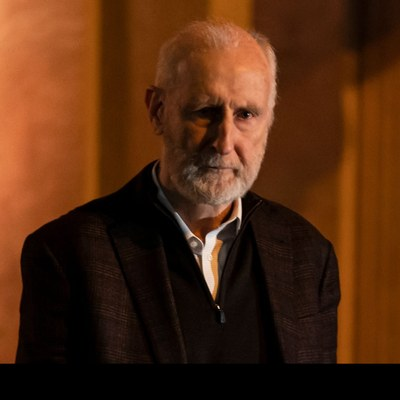
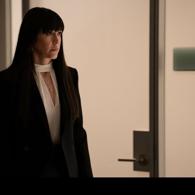
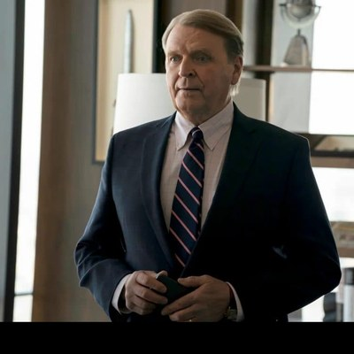
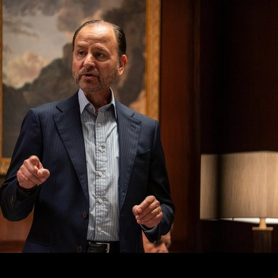
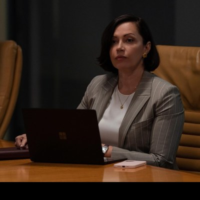
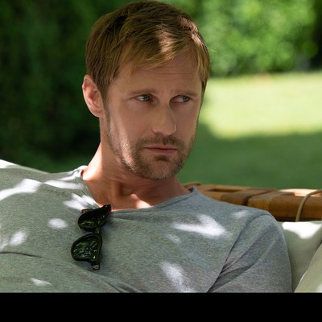
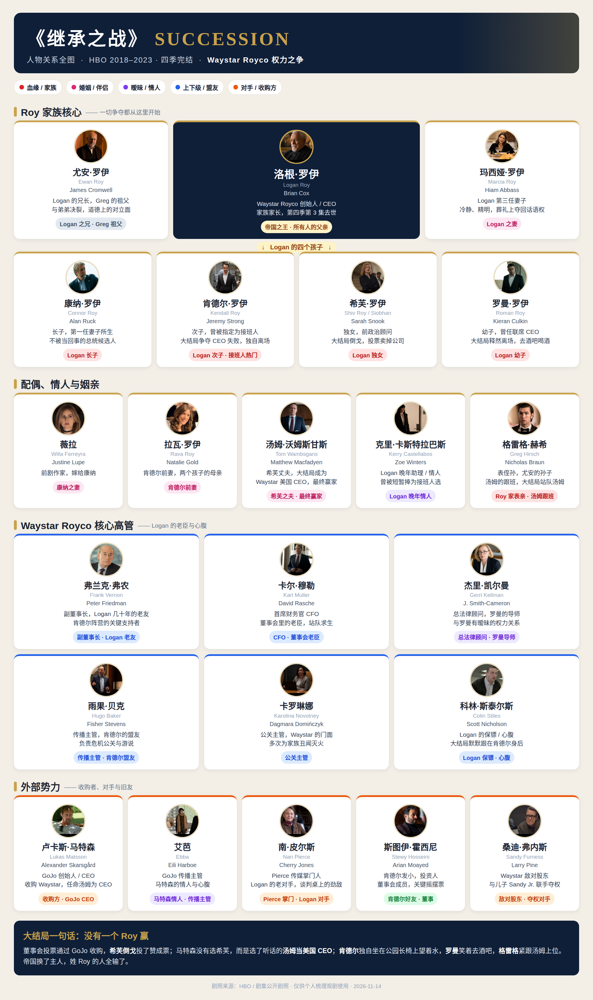
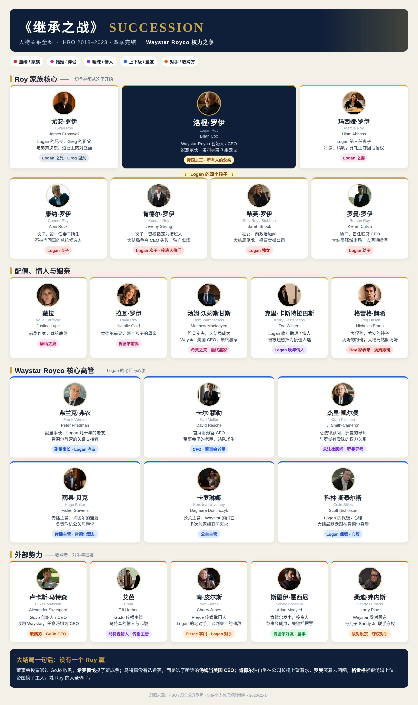

尤安·罗伊
Ewan Roy
James Cromwell
Logan 的兄长，Greg 的祖父
与弟弟决裂，道德上的对立面

Logan 在 S4E3 猝然离世；董事会投票表决 GoJo 收购，希芙倒戈投赞成票，收购通过，马特森任命汤姆为 Waystar 美国 CEO；肯德尔独自坐在公园长椅上，罗曼笑着去酒吧——帝国换了主人，没有一个姓 Roy 的人赢。
没有找到符合的人物，换个关键词试试。
尤安与 Logan 是兄弟，Greg 是尤安的孙子；Logan 的四个孩子里，康纳是第一任妻子所生，其余三人是第二任妻子所生。

Ewan Roy
James Cromwell
Logan 的兄长，Greg 的祖父
与弟弟决裂，道德上的对立面
Logan Roy
Brian Cox
Waystar Royco 创始人 / CEO
家族家长，第四季第 3 集去世
Marcia Roy
Hiam Abbass
Logan 第三任妻子
冷静、精明，葬礼上夺回话语权
Connor Roy
Alan Ruck
长子，第一任妻子所生
不被当回事的总统候选人
Kendall Roy
Jeremy Strong
次子，曾被指定为接班人
大结局争夺 CEO 失败，独自离场
Shiv Roy / Siobhan
Sarah Snook
独女，前政治顾问
大结局倒戈，投票卖掉公司
Roman Roy
Kieran Culkin
幼子，曾任联席 CEO
大结局释然离场，去酒吧喝酒
Willa Ferreyra
Justine Lupe
前剧作家，嫁给康纳
康纳之妻Rava Roy
Natalie Gold
肯德尔前妻，两个孩子的母亲
肯德尔前妻Tom Wambsgans
Matthew Macfadyen
希芙丈夫，大结局成为
Waystar 美国 CEO，最终赢家

Kerry Castellabos
Zoe Winters
Logan 晚年助理 / 情人
曾被短暂捧为接班人选
Greg Hirsch
Nicholas Braun
表侄孙，尤安的孙子
汤姆的跟班，大结局站队汤姆
Frank Vernon
Peter Friedman
副董事长，Logan 几十年的老友
肯德尔阵营的关键支持者

Karl Muller
David Rasche
首席财务官 CFO
董事会里的老臣，站队求生
Gerri Kellman
J. Smith-Cameron
总法律顾问，罗曼的导师
与罗曼有暧昧的权力关系

Hugo Baker
Fisher Stevens
传播主管，肯德尔的盟友
负责危机公关与游说

Karolina Novotney
Dagmara Domińczyk
公关主管，Waystar 的门面
多次为家族丑闻灭火
Colin Stiles
Scott Nicholson
Logan 的保镖 / 心腹
大结局默默跟在肯德尔身后

Lukas Matsson
Alexander Skarsgård
GoJo 创始人 / CEO
收购 Waystar，任命汤姆为 CEO
Ebba
Eili Harboe
GoJo 传播主管
马特森的情人与心腹
Nan Pierce
Cherry Jones
Pierce 传媒掌门人
Logan 的老对手，谈判桌上的劲敌
Stewy Hosseini
Arian Moayed
肯德尔发小，投资人
董事会成员，关键摇摆票
Sandy Furness
Larry Pine
Waystar 敌对股东
与儿子 Sandy Jr. 联手夺权
图例：—— 血缘 ＝ 婚姻 / 伴侣 ～ 暧昧 / 情人 → 上下级 / 效忠 × 对手 / 收购
所有人都想得到他的认可，没有一个人真正得到。
第三段婚姻，玛西娅是唯一能让 Logan 让步的人之一。
兄弟决裂，尤安是家族里道德上的对立面。
最想接班的儿子，也最常被父亲羞辱、利用。
唯一敢在谈判桌上和父亲正面叫板的孩子。
最像父亲的孩子，也最不敢承认自己想要王位。
被排除在继承之外的长子，转而去选总统。
互相利用、互相背叛，最后汤姆赢了妻子。
汤姆的跟班与出气筒，格雷格靠出卖、站队一路往上爬。
导师与被导师，暧昧里全是权力试探。
发小兼商业盟友，斯图伊永远先保自己的钱。
肯德尔阵营的老臣与打手。
收购者，用“卖给谁、当谁的 CEO”分化了三兄妹。
马特森身边唯一能说真话的人。
两个传媒帝国的旧怨，Pierce 收购是 Logan 生前最后一场大战。
董事会里的长期敌人，桑迪父子是外部夺权力量。
祖父给孙子留了遗产，条件是格雷格不准为 Logan 工作——格雷格还是去了。
董事会投票决定要不要把 Waystar 卖给 GoJo。肯德尔想否决收购、自己当 CEO，罗曼和希芙起初答应支持他；希芙在董事会上倒戈投了赞成票，收购通过。马特森没有兑现对希芙的暗示，任命汤姆为 Waystar 美国 CEO。
独自去公园，坐在长椅上望着水发呆，保镖科林远远跟着——全剧最后一幕。
如释重负，去酒吧喝酒，笑着接受自己根本不想当这个 CEO。
坐在车里，汤姆握住她的手，她勉强回握，面无表情。她怀着汤姆的孩子，婚姻只剩利益联姻。
早早站队汤姆，成了汤姆的跟班，跟着一起上位。

